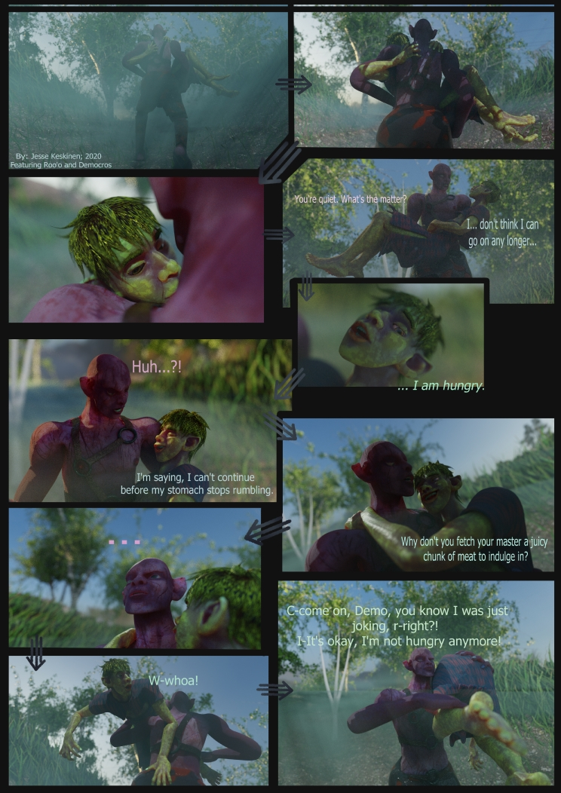

An exhibition work from "Out of screen/Ulos ruudusta" exhibit 2020, a page from a 3D-produced comic, along with a printed 3D model featuring these two characters.
Dis'Isisia, 2021, Spring Semester's Animation Project. Select 1.25 for playback speed in controls for optimal viewing experience.
Type: Animation
Firelight of Life, 2021. The winning media artwork of Hyvinkää Light Festivals 2021 media art competition.
Genre: Generational Light Media Art
Description: The artwork goes through all the stages of life and time. From mother's womb to twilight of old age and beyond, true as a heartbeat, true as the wings of a soaring bird or its' reflection on surface of water. And again, and again, where the artwork ends, it also begins anew, in a perfect cycle of rebirth.